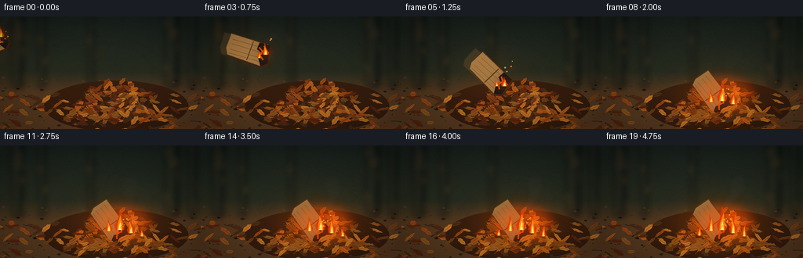
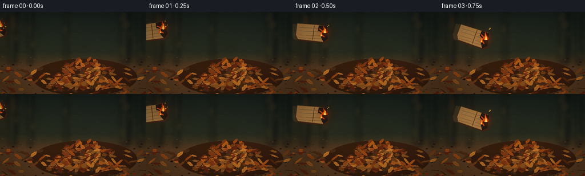

CODING AGENTS AS PIXEL WORLD MODELS
traex/GPT-5.6-Sol · material_0025
点击播放 · 原生 RGB 像素
逐轮保存的候选
回放视频、检查图与代码变化。
每份候选均可单独播放。实际图片检查记录在下方工具轨迹中。
候选 01播放与检查图
点击播放 · 原生 RGB 像素


展开代码变化
--- 上一保存版本
+++ 本次保存版本
@@ -0,0 +1,347 @@
+from pathlib import Path
+import math
+import numpy as np
+from PIL import Image, ImageDraw, ImageFilter
+
+import artifact_io
+
+
+# Deterministic, supersampled procedural rendering. Coordinates below are in
+# final-frame pixels and are scaled by Q for antialiasing.
+W, H, N, FPS = 256, 144, 20, 4.0
+Q = 3
+RW, RH = W * Q, H * Q
+rng = np.random.default_rng(2501)
+
+
+def pts(seq):
+ return [(int(x * Q), int(y * Q)) for x, y in seq]
+
+
+def box(b):
+ return tuple(int(v * Q) for v in b)
+
+
+def rotpt(x, y, cx, cy, a):
+ ca, sa = math.cos(a), math.sin(a)
+ return cx + x * ca - y * sa, cy + x * sa + y * ca
+
+
+def leaf_shape(cx, cy, length, width, angle, irregular=0.0):
+ # Pointed, slightly serrated dry leaf silhouette.
+ raw = [
+ (-.51, 0), (-.34, -.24), (-.26, -.39), (-.08, -.43),
+ (.08, -.34), (.26, -.38), (.42, -.19), (.53, 0),
+ (.39, .20), (.23, .36), (.05, .39), (-.13, .31),
+ (-.31, .33), (-.39, .14)
+ ]
+ out = []
+ ca, sa = math.cos(angle), math.sin(angle)
+ for i, (u, v) in enumerate(raw):
+ v += irregular * math.sin(i * 3.7 + cx)
+ x, y = u * length, v * width
+ out.append((cx + x * ca - y * sa, cy + x * sa + y * ca))
+ return out
+
+
+def draw_leaf(draw, leaf, lit=0.0, shift=(0, 0), alpha=255):
+ cx, cy, le, wi, ang, col, irr = leaf
+ cx += shift[0]
+ cy += shift[1]
+ c = tuple(min(255, int(col[k] + lit * ([42, 18, -5][k]))) for k in range(3))
+ draw.polygon(pts(leaf_shape(cx, cy, le, wi, ang, irr)), fill=c + (alpha,))
+ # Dark rim and a warm central vein make the pile read as individual leaves.
+ outline = tuple(max(0, int(v * .55)) for v in c) + (min(alpha, 150),)
+ draw.line(pts([rotpt(-le * .42, 0, cx, cy, ang),
+ rotpt(le * .42, 0, cx, cy, ang)]), fill=outline, width=max(1, Q // 2))
+ stem0 = rotpt(-le * .52, 0, cx, cy, ang)
+ stem1 = rotpt(-le * .69, .02 * wi, cx, cy, ang)
+ draw.line(pts([stem0, stem1]), fill=outline, width=Q)
+
+
+# Stable scene texture.
+palette = [(94, 38, 16), (123, 54, 18), (150, 69, 19), (174, 88, 24),
+ (111, 61, 23), (187, 111, 36), (74, 43, 22), (139, 82, 30)]
+
+ground_leaves = []
+for _ in range(74):
+ x = rng.uniform(-8, 265)
+ y = rng.uniform(99, 149)
+ le = rng.uniform(8, 18)
+ ground_leaves.append((x, y, le, rng.uniform(3.2, 7.2), rng.uniform(-.7, .7),
+ palette[rng.integers(len(palette))], rng.uniform(-.07, .07)))
+
+pile_leaves = []
+for _ in range(142):
+ # Elliptical mound, denser at the bottom.
+ for __ in range(100):
+ x = rng.normal(151, 39)
+ mound_top = 82 + .0105 * (x - 151) ** 2
+ if 57 < x < 238 and mound_top < 133:
+ y = rng.uniform(mound_top, 134)
+ break
+ depth = (y - mound_top) / max(1, 134 - mound_top)
+ le = rng.uniform(10, 22) * (0.78 + .22 * depth)
+ pile_leaves.append((x, y, le, rng.uniform(4.0, 8.2), rng.uniform(-1.05, 1.05),
+ palette[rng.integers(len(palette))], rng.uniform(-.08, .08)))
+pile_leaves.sort(key=lambda z: z[1])
+
+# A few foreground leaves are composited after the landed cardboard.
+front_leaves = []
+for i in range(17):
+ x = 92 + i * 7.2 + rng.uniform(-5, 5)
+ y = rng.uniform(119, 136)
+ front_leaves.append((x, y, rng.uniform(12, 21), rng.uniform(4, 8),
+ rng.uniform(-.8, .8), palette[rng.integers(len(palette))], .03))
+
+
+def make_background():
+ yy, xx = np.mgrid[0:RH, 0:RW]
+ yn = yy / RH
+ # Out-of-focus dark woodland, then earthy forest floor.
+ sky = np.zeros((RH, RW, 3), dtype=np.float32)
+ sky[..., 0] = 25 + 26 * yn
+ sky[..., 1] = 33 + 18 * yn
+ sky[..., 2] = 29 + 3 * yn
+ ground = np.zeros_like(sky)
+ ground[..., 0] = 58 + 35 * yn
+ ground[..., 1] = 43 + 18 * yn
+ ground[..., 2] = 28 + 6 * yn
+ blend = np.clip((yn - .49) / .18, 0, 1)[..., None]
+ arr = sky * (1 - blend) + ground * blend
+ noise = rng.normal(0, 2.2, (RH, RW, 1))
+ arr += noise
+ im = Image.fromarray(np.uint8(np.clip(arr, 0, 255)), "RGB").convert("RGBA")
+ # Blurred trunks and distant copper foliage establish an outdoor setting.
+ distant = Image.new("RGBA", (RW, RH), (0, 0, 0, 0))
+ d = ImageDraw.Draw(distant, "RGBA")
+ for x, wid, tone in [(15, 14, 22), (49, 8, 28), (211, 17, 20), (240, 9, 25), (112, 7, 29)]:
+ d.rectangle(box((x, -8, x + wid, 91)), fill=(tone, tone + 5, tone + 1, 185))
+ d.rectangle(box((x + wid * .18, 0, x + wid * .38, 88)), fill=(69, 61, 42, 42))
+ for _ in range(45):
+ x, y = rng.uniform(-10, 266), rng.uniform(8, 85)
+ r = rng.uniform(2, 7)
+ d.ellipse(box((x-r, y-r*.5, x+r, y+r*.5)), fill=(115, 72, 29, rng.integers(12, 40)))
+ distant = distant.filter(ImageFilter.GaussianBlur(4 * Q))
+ im.alpha_composite(distant)
+ # Mottled dirt and twigs in focus.
+ d = ImageDraw.Draw(im, "RGBA")
+ for _ in range(165):
+ x, y = rng.uniform(0, W), rng.uniform(78, H)
+ r = rng.uniform(.15, 1.2)
+ val = rng.integers(25, 78)
+ d.ellipse(box((x-r*2, y-r, x+r*2, y+r)), fill=(val, int(val*.75), int(val*.48), 70))
+ for _ in range(13):
+ x, y = rng.uniform(0, W), rng.uniform(101, H)
+ d.line(pts([(x, y), (x+rng.uniform(8, 26), y+rng.uniform(-5, 4))]),
+ fill=(43, 28, 17, 150), width=Q)
+ # Mound underpainting removes gaps between overlapping leaves.
+ d.ellipse(box((56, 82, 240, 147)), fill=(52, 28, 14, 255))
+ for lf in ground_leaves:
+ draw_leaf(d, lf)
+ for lf in pile_leaves:
+ draw_leaf(d, lf)
+ return im
+
+
+BACKGROUND = make_background()
+
+
+def fire_glow(base, strength, cx=151, cy=104):
+ if strength <= 0:
+ return base
+ arr = np.asarray(base.convert("RGB"), dtype=np.float32)
+ yy, xx = np.mgrid[0:RH, 0:RW]
+ dx, dy = xx / Q - cx, yy / Q - cy
+ g = np.exp(-(dx*dx/(42*42) + dy*dy/(30*30))) * strength
+ arr[..., 0] += g * 83
+ arr[..., 1] += g * 32
+ arr[..., 2] -= g * 8
+ return Image.fromarray(np.uint8(np.clip(arr, 0, 255)), "RGB").convert("RGBA")
+
+
+def cardboard_pose(t):
+ if t <= 6:
+ u = t / 6.0
+ # A descending ballistic arc from offscreen left into the center mound.
+ x = -18 + 158 * u
+ y = 35 + 60 * u - 22 * math.sin(math.pi * u)
+ a = -.42 + 1.38 * u
+ return x, y, a, True
+ # It settles into the leaves with a tiny damped bounce.
+ k = t - 6
+ return 141 + 2.8 * math.exp(-.55*k) * math.sin(1.7*k), \
+ 99 - 2.0 * math.exp(-.55*k) * abs(math.sin(1.5*k)), \
+ .88 + .12 * math.exp(-.48*k) * math.sin(1.6*k), False
+
+
+def card_corners(cx, cy, a, scale=1.0):
+ # Torn quadrilateral, not a pristine rectangle.
+ raw = [(-27, -15), (25, -13), (28, 10), (20, 16), (-25, 13), (-29, 5)]
+ return [rotpt(x*scale, y*scale, cx, cy, a) for x, y in raw]
+
+
+def draw_card(layer, cx, cy, a, airborne, frame, ghost=False):
+ d = ImageDraw.Draw(layer, "RGBA")
+ poly = card_corners(cx, cy, a)
+ alpha = 50 if ghost else 255
+ # Card edge/thickness and corrugated fibers.
+ off = (1.4, 2.2)
+ d.polygon(pts([(x+off[0], y+off[1]) for x, y in poly]), fill=(66, 34, 17, alpha))
+ d.polygon(pts(poly), fill=(166, 119, 64, alpha))
+ d.line(pts(poly + [poly[0]]), fill=(85, 54, 28, min(alpha, 190)), width=Q)
+ # Fold and corrugation lines travel with the card.
+ for yy in (-8, -2, 5, 10):
+ p0 = rotpt(-23, yy, cx, cy, a)
+ p1 = rotpt(22, yy+.8, cx, cy, a)
+ d.line(pts([p0, p1]), fill=(106, 72, 38, min(alpha, 115)), width=max(1, Q//2))
+ p0, p1 = rotpt(3, -12, cx, cy, a), rotpt(1, 13, cx, cy, a)
+ d.line(pts([p0, p1]), fill=(91, 56, 29, min(alpha, 145)), width=Q)
+ # Sooty, visibly burning right corner.
+ char = [rotpt(x, y, cx, cy, a) for x, y in [(11,-13),(25,-13),(28,10),(20,16),(15,7),(18,0),(10,-4)]]
+ d.polygon(pts(char), fill=(31, 25, 21, alpha))
+ edge = [rotpt(x, y, cx, cy, a) for x, y in [(12,-7),(18,-3),(15,2),(21,7)]]
+ d.line(pts(edge), fill=(231, 77, 12, alpha), width=2*Q)
+
+
+def smoke_layer(frame, landed):
+ lay = Image.new("RGBA", (RW, RH), (0, 0, 0, 0))
+ d = ImageDraw.Draw(lay, "RGBA")
+ if not landed:
+ cx, cy, a, _ = cardboard_pose(frame)
+ source = rotpt(22, -5, cx, cy, a)
+ age_max = 3
+ density = .55
+ else:
+ source = (156, 91)
+ age_max = 8
+ density = min(1, .38 + .065*(frame-6))
+ # Coherent rising wisps: circles blur into semi-transparent smoke columns.
+ for j in range(14):
+ age = (j / 13) * age_max
+ phase = frame * .42 - j * .58
+ x = source[0] + 2.0*age + 4.1*math.sin(phase*.72) + (j%3-1)*1.3
+ y = source[1] - 5.0*age - j*.35
+ r = 2.0 + age*.82
+ al = int((53 - 4.2*age) * density)
+ d.ellipse(box((x-r*1.25, y-r, x+r*1.25, y+r)), fill=(71, 69, 64, max(0,al)))
+ return lay.filter(ImageFilter.GaussianBlur(2.4 * Q))
+
+
+def flame(draw, bx, by, height, width, phase, alpha=255, lean=0.0):
+ # Three nested irregular tapered shapes, from red-orange to pale yellow.
+ flick = math.sin(phase) * .12 + math.sin(phase*2.17) * .07
+ h = height * (1 + flick)
+ tipx = bx + lean*h + math.sin(phase*1.31)*width*.25
+ outer = [(bx-width*.55, by), (bx-width*.72, by-h*.22),
+ (bx-width*.31, by-h*.51), (tipx, by-h),
+ (bx+width*.18, by-h*.47), (bx+width*.66, by-h*.19), (bx+width*.52, by)]
+ draw.polygon(pts(outer), fill=(224, 54, 8, int(alpha*.87)))
+ midh = h*.72
+ mid = [(bx-width*.38, by), (bx-width*.31, by-midh*.36),
+ (bx+math.sin(phase*.8)*width*.2, by-midh),
+ (bx+width*.29, by-midh*.34), (bx+width*.34, by)]
+ draw.polygon(pts(mid), fill=(255, 132, 12, int(alpha*.96)))
+ innh = h*.39
+ inner = [(bx-width*.19, by), (bx-width*.12, by-innh*.45),
+ (bx+width*.05, by-innh), (bx+width*.2, by)]
+ draw.polygon(pts(inner), fill=(255, 234, 113, alpha))
+
+
+def render(frame):
+ landed = frame >= 7
+ spread = max(0.0, (frame - 6) / 13)
+ flicker = .91 + .09 * math.sin(frame*2.37)
+ im = fire_glow(BACKGROUND.copy(), (0.22 if not landed else (.52 + .45*spread))*flicker,
+ 150 if landed else cardboard_pose(frame)[0],
+ 101 if landed else cardboard_pose(frame)[1])
+
+ # Ground contact shadow gives weight to the flying/landing action.
+ shadow = Image.new("RGBA", (RW, RH), (0,0,0,0))
+ sd = ImageDraw.Draw(shadow, "RGBA")
+ cx, cy, a, airborne = cardboard_pose(frame)
+ sh_y = 111 if airborne else 116
+ sh_w = max(8, 31 - max(0, sh_y-cy)*.20)
+ sd.ellipse(box((cx-sh_w, sh_y-3, cx+sh_w, sh_y+4)), fill=(8,5,3, 40 if airborne else 95))
+ shadow = shadow.filter(ImageFilter.GaussianBlur(2.8*Q))
+ im.alpha_composite(shadow)
+ im.alpha_composite(smoke_layer(frame, landed))
+
+ card = Image.new("RGBA", (RW, RH), (0,0,0,0))
+ # Subtle motion trail only during the fastest part of the throw.
+ if airborne and 1 <= frame <= 5:
+ px, py, pa, _ = cardboard_pose(frame-.28)
+ draw_card(card, px, py, pa, True, frame, ghost=True)
+ draw_card(card, cx, cy, a, airborne, frame)
+ im.alpha_composite(card)
+
+ # Landed card sinks partly beneath foreground leaves.
+ if landed:
+ cover = Image.new("RGBA", (RW, RH), (0,0,0,0))
+ cd = ImageDraw.Draw(cover, "RGBA")
+ for lf in front_leaves:
+ # A tiny recoil/wind rustle after impact.
+ rustle = math.exp(-.35*(frame-7))*math.sin((frame-7)*1.9 + lf[0])*.65
+ draw_leaf(cd, lf, lit=.35+spread*.35, shift=(rustle, -abs(rustle)*.2))
+ im.alpha_composite(cover)
+
+ # Fire bloom behind crisp flame shapes.
+ glow = Image.new("RGBA", (RW, RH), (0,0,0,0))
+ gd = ImageDraw.Draw(glow, "RGBA")
+ if airborne:
+ sx, sy = rotpt(23, -2, cx, cy, a)
+ gd.ellipse(box((sx-10,sy-10,sx+10,sy+10)), fill=(255,81,0,95))
+ else:
+ gd.ellipse(box((114,72,197,127)), fill=(255,71,0,int(64+35*spread)))
+ im.alpha_composite(glow.filter(ImageFilter.GaussianBlur(7*Q)))
+
+ flames = Image.new("RGBA", (RW, RH), (0,0,0,0))
+ fd = ImageDraw.Draw(flames, "RGBA")
+ if airborne:
+ # Flame is anchored to the charred corner and streams backward in flight.
+ sx, sy = rotpt(22, -2, cx, cy, a)
+ flame(fd, sx, sy+2, 14, 6.5, frame*2.1, lean=-.18)
+ sx2, sy2 = rotpt(16, 6, cx, cy, a)
+ flame(fd, sx2, sy2, 8, 4, frame*2.1+2.4, lean=-.12)
+ else:
+ k = frame - 6
+ flame(fd, 153, 108, 25+5*spread, 9.5, frame*2.18, lean=.07)
+ flame(fd, 167, 112, 17+9*spread, 7.0, frame*1.91+1.3, lean=.12)
+ flame(fd, 139, 109, 13+8*spread, 6.3, frame*2.33+3.1, lean=-.07)
+ if frame >= 11:
+ flame(fd, 181, 116, 7+10*spread, 5.2, frame*2.07+.4, lean=.10)
+ if frame >= 15:
+ flame(fd, 124, 115, 5+8*spread, 4.7, frame*2.5+2.0, lean=-.08)
+ im.alpha_composite(flames)
+
+ # Rising embers make the combustion unmistakable but remain sparse.
+ emb = Image.new("RGBA", (RW, RH), (0,0,0,0))
+ ed = ImageDraw.Draw(emb, "RGBA")
+ count = 4 if airborne else int(6 + 10*spread)
+ srcx, srcy = ((cx+20, cy-2) if airborne else (155,106))
+ for j in range(count):
+ age = ((frame*.73 + j*1.67) % 6.3)
+ ex = srcx + math.sin(j*7.1 + frame*.31)*4 + age*(.6 + (j%3)*.3)
+ ey = srcy - age*(2.2 + (j%2)*.55)
+ rr = .45 + .25*((j+frame)%3)
+ ed.ellipse(box((ex-rr,ey-rr,ex+rr,ey+rr)), fill=(255,164+5*(j%3),42,210))
+ im.alpha_composite(emb)
+
+ # Cinematic vignette and a shallow warm foreground haze.
+ arr = np.asarray(im.convert("RGB"), dtype=np.float32)
+ yy, xx = np.mgrid[0:RH, 0:RW]
+ nx, ny = (xx-RW/2)/(RW/2), (yy-RH/2)/(RH/2)
+ vig = np.clip(1 - .22*np.maximum(0, nx*nx + ny*ny - .25), .72, 1)
+ arr *= vig[...,None]
+ small = Image.fromarray(np.uint8(np.clip(arr,0,255)), "RGB").resize((W,H), Image.Resampling.LANCZOS)
+ return np.asarray(small, dtype=np.uint8)
+
+
+def main():
+ frames = np.stack([render(i) for i in range(N)], axis=0)
+ artifact_io.save(frames, Path(__file__).resolve().parent)
+ print("saved", frames.shape, frames.dtype)
+
+
+if __name__ == "__main__":
+ main()
可观测工具轨迹
实际执行的命令与返回图片。
命令 1exit 0
/bin/bash -lc "cat prompt.txt && printf '\\n---RULES---\\n' && cat GENERATION_RULES.md && printf '\\n---SPEC---\\n' && cat task_spec.json"
命令 2exit 1
/bin/bash -lc "find . -maxdepth 2 -type f -printf '%p\\n' | sort && printf '\\nTOOLS\\n' && command -v ffmpeg && command -v python3 && python3 - <<'PY' mods=['numpy','PIL','cv2','moviepy','cairo'] for m in mods: try: x=__import__(m); print(m,'OK',getattr(x,'__version__','')) except Exception as e: print(m,'NO',str(e)[:100]) PY"
命令 3exit 0
/bin/bash -lc "cat artifact_io.py; printf '\\n--- binaries/modules ---\\n'; (command -v ffmpeg || true); command -v python3; python3 - <<'PY' mods=['numpy','PIL','cv2','moviepy','cairo','imageio'] for m in mods: try: x=__import__(m); print(m,'OK',getattr(x,'__version__','')) except Exception as e: print(m,'NO',str(e)[:100]) PY"
命令 4exit 1
/bin/bash -lc 'python3 generate.py'
命令 5exit 0
/bin/bash -lc 'python3 generate.py && ls -lh pixels.npz inspection.png transition_check.png index.html frames/00.png frames/19.png'
命令 6exit 0
/bin/bash -lc "python3 - <<'PY'
from pathlib import Path
import numpy as np
from PIL import Image
files=sorted(Path('frames').glob('*.png'))
a=np.stack([np.asarray(Image.open(p).convert('RGB')) for p in files])
print('frames',len(files),'shape',a.shape,'dtype',a.dtype,'range',a.min(),a.max())
print('means',np.round(a.mean((1,2,3)),1).tolist())
print('mean_abs_frame_deltas',np.round(np.abs(a[1:].astype(int)-a[:-1]).mean((1,2,3)),2).tolist())
print('all_rgb',all(Image.open(p).mode=='RGB' for p in files))
z=np.load('pixels.npz')['pixels']; print('packed tensor',z.shape,z.dtype)
PY"保存候选 1 份；完成命令 6 次；可验证图片返回 0 张。原始 API 响应与完整日志保留在本地。